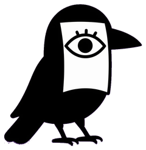

Save anything. Find it again.
Notes, links, photos and files go in as they are, with nothing to sort. Find them again by searching, or by asking in your own words.
Or, signed in to Enqueue sync on your Mac?
On your Mac, approve this phone. It shows the same code:
Waiting for approval...
No Mac nearby?
Set on your Mac. Change the model or key there and it comes here.
Questions, captures, facet edits, and syncs. Tap a row for the full record.